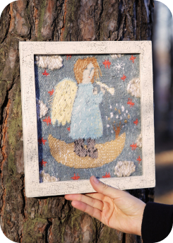
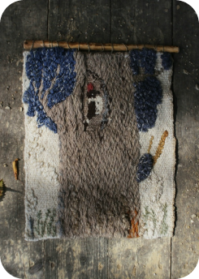
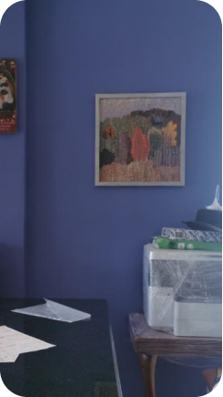
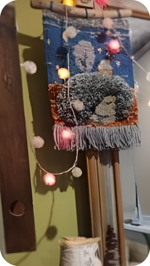
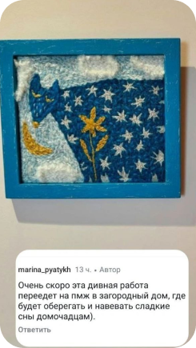
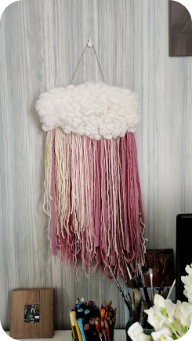

Художник из Перми. Член Союза художников России, выпускница Академии Штиглица.
Екатерина создаёт интерьерные гобелены, которые работают как мягкая акустика, зонируют пространство и добавляют тактильность минималистичным интерьерам.
Екатерина Борисова родилась и живёт в Перми. Она работает в техниках ручного ткачества и ковровой вышивки специальной иглой (punch needle). Её гобелены не только украшают стену, но и:
Художница принимает заказы на уникальные панно по индивидуальным размерам и цветам. Срок изготовления — от 2 до 6 недель. Цена: от 4 000 ₽ за камерные работы, крупные интерьерные полотна — от 80 000 ₽ (зависит от размера и сложности).
Если вы хотите заказать гобелен или вышивку, напишите Екатерине в сообществе VK или на электронную почту.
Искусство Екатерины многогранно — от крупных галерейных полотен до камерных этюдов и живописи. Каждое направление имеет свой масштаб и характер.
Масштабные, фактурные работы в технике ручного ткачества. Задают тон интерьеру, становятся центром притяжения в гостиной, холле или общественном пространстве. Заказать большой гобелен в Перми можно по индивидуальному проекту.
Легкие интерьерные работы, создающие уют в спальне, детской или небольшой гостиной. Техника ковровой вышивки придает им выразительный объем и мягкую фактуру. Идеальный подарок для ценителей авторского декора.
Работы маслом и акрилом на холсте — это и самостоятельные произведения, и основа для будущих гобеленов. Они помогают уловить настроение и цвет, которые затем переходят в текстиль. Авторский текстиль для дома часто рождается именно из таких этюдов.
Рельеф, переплетения, объём — это ручная работа, которую хочется трогать. Никакой печати.
Гобелен поглощает звук, делая комнату тише — особенно ценно в студиях и скандинавских интерьерах.
Крупное панно выделяет обеденную или рабочую зону в открытом пространстве.
Даже при повторении сюжета фактура будет другой — вы получаете единственный экземпляр.
Каждая работа в этой ленте — отдельная история. Листайте вниз, чтобы познакомиться с ними поближе.

«Великолепная работа! Были учтены все пожелания по цветовой палитре и размерам! Ангелок поселился в детской комнате. Катя, благодарю! 😊»

«Мы с мальчиками очень любим этот гобелен. Для меня он про что-то очень доброе из Винни-Пуха... Такое природное переплетение ниточек, им кажется, сам лес сплёл про себя картинку. Отдельный восторг от композиции — эта широта, мощь дерева!»

«Гобелен доехал очень быстро! В целости и сохранности! Он чудесный — тёплая яркая осень, которой мне здесь очень не хватает. Очень приятная упаковка и невероятные открытки!»

«Гобелен вживую такой тактильный и такие потрясающие оттенки. И упаковка такая приятная. Ёжик прекрасный!»


«Как только увидела похожее панно в ленте, поняла — оно моё! Оно добавит в интерьер красок и тепла, так нужных мне. Муж сначала скептически отнёсся, а теперь сам подходит и разглядывает фактуру. Спасибо, Катюша!»
📸 Все отзывы — из реальной переписки. Читать ещё в VK
Хотите научиться создавать фактурные панно своими руками? Екатерина проводит мастер-классы для взрослых и детей:
✔️ В результате вы создадите готовое панно 20×20 см с нуля, освоите технику и получите лайфхаки от профессионала.
Камерные панно в технике ковровой вышивки — от 4 000 ₽. Небольшие тканые гобелены — от 7 000 ₽. Стоимость крупных интерьерных полотен зависит от масштаба и сложности.
Это зависит от размера, замысла и сложности исполнения работы. В среднем от 2-х до 8-ми недель, но каждый случай индивидуален.
Отправка по России СДЭКом или Почтой. В Перми возможен самовывоз.
Да, но фактура будет уникальной — это не копия, а новая авторская интерпретация. При этом вы сохраняете полюбившуюся композицию и цветовое решение, а каждая работа остаётся эксклюзивной.
Напишите Екатерине, и она:
ВКонтакте: vk.com/public_katia_art_thread
Instagram: @katia_borisova
Email: borek89@mail.ru
Написать в VK и рассчитать стоимость